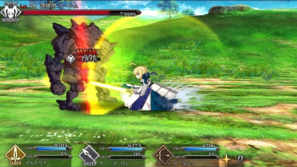
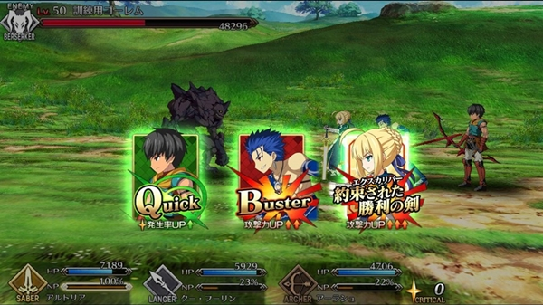
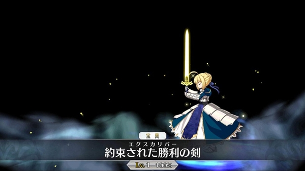
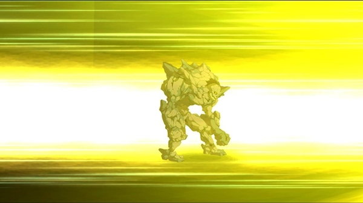
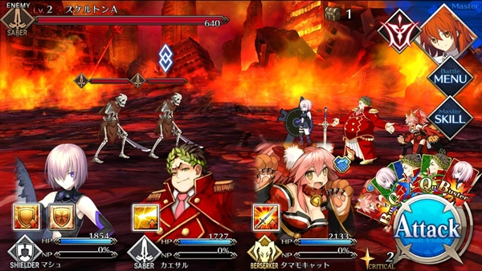

( รีวิว ) Fate Grand Order เป็นอีกเกมนึงที่สร้างขึ้นมาจามการ์ตูนดังที่เป็นที่นิยมไปทั่วโลกอย่าง Fate ซึ่งการ์ตูนเรื่องนี้ทำออกมาหลายภาคมาก นอกจากนี้ยังเคยถูกนำไปสร้างเป็นเกมบนเครื่อง PSP มาแล้ว เป็นผลงานชิ้นโบว์แดงของค่าย TYPE-MOON เลยก็ว่าได้ และในตอนนี้การ์ตูนเรื่อง Fate ก็ได้กลายมาเป็นเกมมือถือแล้วภายใต้ชื่อว่า Fate/Grand Order ซึ่งในบทความนี้ผมก็จะมาแนะนำเกมนี้ให้เพื่อนๆ ได้รู้จักกันนะครับผม






ต้องบอกก่อนเลยว่าการ์ตูน Fate มีเนื้อเรื่องที่ซับซ้อน และมีหลายภาค ทำให้เกมนี้มีตัวละครหรือที่เรียกกันว่า Servant เยอะมากๆ ขยายต่อ Servant หากเปรียบเทียบกับเกมทั่วไปคือ ตัวละคร ลูกน้องเรา หรือสัตว์อัญเชิญอะไรประมาณนั้น จะแบ่งออกเป็นคลาสๆ ได้แก่ Saber ( คลาสที่เก่งที่สุดในการ์ตูน เพราะคลาสนี้คือนางเอก 555 ) , Archer , Lancer , Caster , Assassin , Rider , Berserker และคลาสสุดท้าย Shielder ซึ่งแต่ละคลาสก็จะเหมือนตัวแทนของสุดยอดวีรชน/ทรชน/ทรราชย์ ชื่อดังในตำนานหรือนิยายต่างๆ ยกตัวอย่างนางเอกและเหมือนเป็นตัวชูโรงของการ์ตูนเรื่องนี้อย่าง Saber ก็คือ King Arthur ผู้ครอบครองดาบ Excalibur นั้นเอง
เนื้อเรื่องของเกมนี้ ถูกเขียนขึ้นมาใหม่ทั้งหมด โดยจะเกี่ยวกับการย้อนเวลาหา Saber กำ ไม่ใช่ ย้อนเวลาไปยังช่วงเหตุการณ์ต่างๆ ที่เกิดขึ้นในช่วง สงครามจอกศักดิ์สิทธิ์ คล้ายกับ Final record keeper โดยเราต้องเข้าไปมีส่วนร่วมกับสงครามและต่อสู้เพื่อคลายปมของเนื้อเรื่องให้ได้ บางช่วงถ้าใครอ่านภาษาญี่ปุ่นออกจะรู้เลยว่ามันดราม่ามากๆ ขนาดอ่านไม่ออกยังรู้สึกได้ 555
การต่อสู้ของเกมนี้ผมค่อนข้างสนุกกับมันนะ เกมนี้จะแบ่งการต่อสู้ออกเป็น 2 ส่วนคือ ส่วนของ Master หรือตัวเราที่จะมีสกิลคอยสนับสนุน เหล่า Servant และ Servant ก็มีสกิลเช่นกัน แต่ละสกิลก็จะมี Cool Down และระยะเวลาของผลลัพธ์ รวมไปถึงเป้าหมายเดียวหรือหมู่
โดยรวมแล้วเกมนี้เป็นเกมที่ตอบโจทย์แฟนๆ ของการ์ตูนเรื่องนี้อย่างยิ่งเพราะมันอัดแน่นไปด้วยเนื้อเรื่องของการ์ตูนที่ถูกเขียนขึ้นมาใหม่ รวมไปถึง Servant ที่ขนกันมาเป็นกองทัพ สำหรับคนที่ไม่ได้ชอบการ์ตูนเรื่องนี้ก็สามารถเล่นได้แบบสบายๆ เพราะรูปแบบการต่อสู้ไม่ได้ซับซ้อนอะไรเลย ถึงจะอ่านไม่ออกก็สามารถเล่นได้อย่างสบายๆ ข้อเสียเรื่อง Auto นั้นถ้าไม่คิดอะไรก็เล่นได้ ส่วนเรื่องสุ่มตัวละคร อยู่ที่เพื่อนๆ แล้วว่าดวงจะแข็งเท่าไหร่ 5555